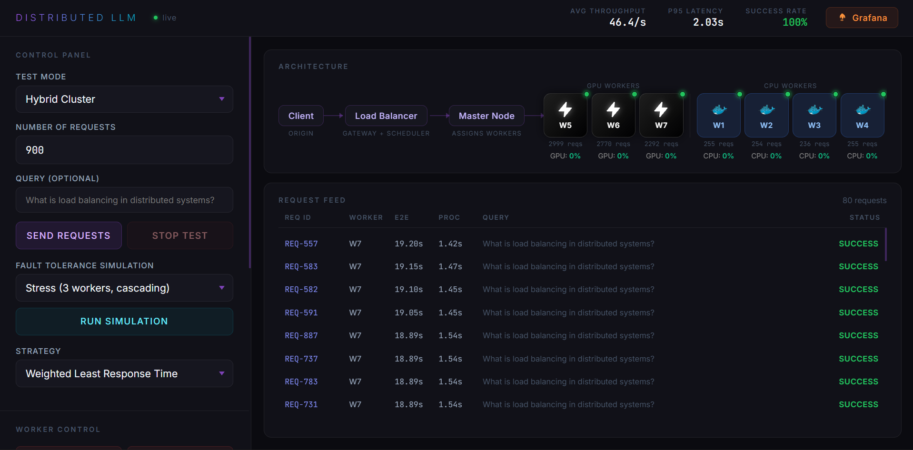

01 / DISTRIBUTED SYSTEMS
Distributed LLM
Distributed LLM
Inference System
Built an inference system that distributes requests across GPU and CPU nodes. A custom Weighted Least Response Time load balancer routes requests based on worker response times and load.
64 req/sMeasured throughput
0%Failures at high concurrency
GPU workers run LLaMA 3.2 Instruct through vLLM, with Docker-based CPU workers running DistilGPT-2 as a fallback. Added health checks, retries with exponential backoff, and rerouting for worker failures, plus connection pooling and per-node admission control.
View project INFERENCE / OBSERVABILITY

REQUEST→WLRT BALANCER→GPU / CPU